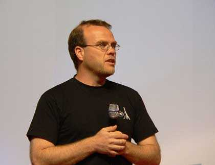

<div class="profile"><div>
  <div class="source">
PHP (1994)
  </div>
  <div class="detail">
    
    <div class="search"><a href="http://www.google.com/cse?cx=partner-pub-6997921015773263:4467526896&ie=UTF-8&q=Rasmus Lerdorf" target="_blank"></a> | <a href="http://en.wikipedia.org/wiki/Rasmus_Lerdorf" target="_blank">wiki</a></div>
    <div class="name"><a href="http://lerdorf.com/" target="_blank">Rasmus Lerdorf</a></div>
    <div class="info"><b>Guido van Rossum</b> (born 31 January 1956[citation needed]) is a Dutch computer programmer who is best known as the author of the Python programming language. In the Python community, Van Rossum is known as a "Benevolent Dictator For Life" (BDFL), meaning that he continues to oversee the Python development process, making decisions where necessary.
    <p><b><a href="http://en.wikipedia.org/wiki/PHP" target="_blank">PHP</a></b> is a general-purpose server-side scripting language originally designed for web development to produce dynamic web pages. For this purpose, PHP code is embedded into the HTML source document and interpreted by a web server with a PHP processor module, which generates the web page document.</p>
    </div>
  </div>
  <div class="photo">
    
  </div>
</div></div>